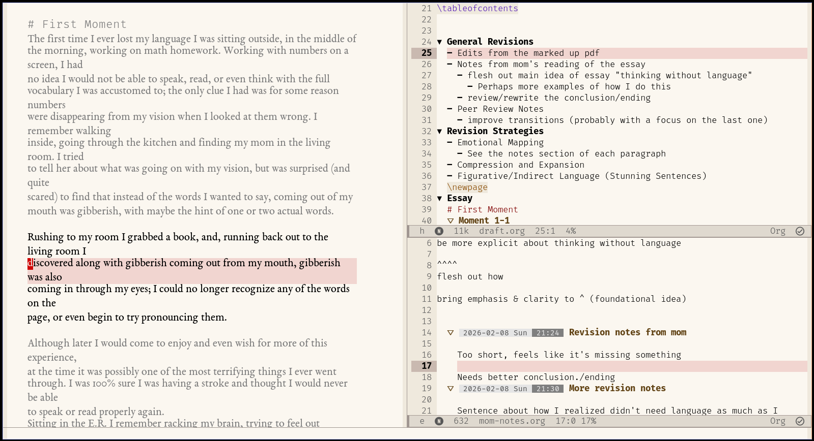

Starting out for this semester I was not at all used to reviewing and revising my own work, and only a little bit better at reading others work and giving them feedback. Now after the most of the semester is over I have gotten much more comfortable at revising my work, after being explicitly required to do so. This comes from two paths, just through repetition/practice I have gotten better, and through having revision required as a separate step. While the basic practice was important in improving my revision, having it required was much more valuable. Coming in, I almost never revised because I would either not give myself enough time (because I spent too long trying to write it perfect the first time), or due to aversion to reading my writing (because I think it is very bad, as I wrote it quickly to just have something done). However, after being required to re-read my work and revise it multiple times I have seen and experienced how important and useful revision can be. Additionally I began to actually enjoy revision, through the essay 1 clean/messy copy revision and especially the top 20 revision assignment where I carefully went through my writing addressing my most common mistakes.
